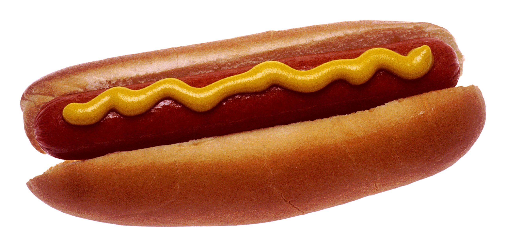

Bienvenidos al panda de los jochos. Aquí probarás lo mejor de lo mejor en jochos. Tenemos de todo: desde sencillos hasta super complejos economicos y extra especiales, de carne, quesos, verduras y mucho mas. Ven y no te arrepentiras.
Encuentranos en la facultad de administración y contabilidad de la UNACH.
SOMOS LA MEJOR OPCION PARA TU HAMBRE Y AUN MÁS PARA TU ANTOJO.
Contacta al panda de los jochos en Facebook, Twitter o Instagram.